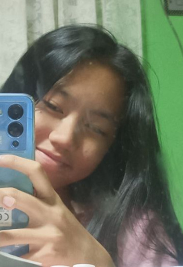

What are some interesting facts about me?
- I tend to go by the name Kei or Kath.
- I am a huge fan of psychological-thriller books.
- I have a younger brother who is very makulit.
- My tastes for music is very wide. (I tend to avoid rock music, but if nice naman g lang.)
- I play Valo, Genshin, Honkai Star Rail, Mobile Legends, CODM, and other fps and roleplaying games.
- A big fan of spicy food and ice-cream. (Especially if ma-stress.)
- I am mostly online in tiktok and instagram.
- Very first fan of Zueya ship. (students nimo ni sir)
All Rights Reserved, Kathleen Rose Pasaol 2023